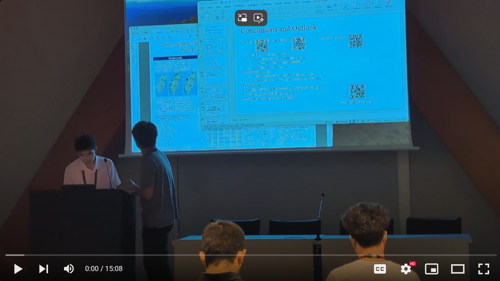

Research
Below is a list of research projects I have previously worked on. I’m currently working on a visualization system for Vision Language Models to aid people who may be visually/hearing impaired in navigating new environments.
- Zhiqiang Jiang, Isaac Huang, Xin Wang. 2024. IndoorRoaming: An LLM-based System for Indoor Tour Guidance. The 4th ACM SIGKDD Workshop on Deep Learning for Spatiotemporal Data, Applications, and Systems (DeepSpatial 2024), Barcelona, Spain, Aug 26, 2024. Here’s a video of the presentation.
